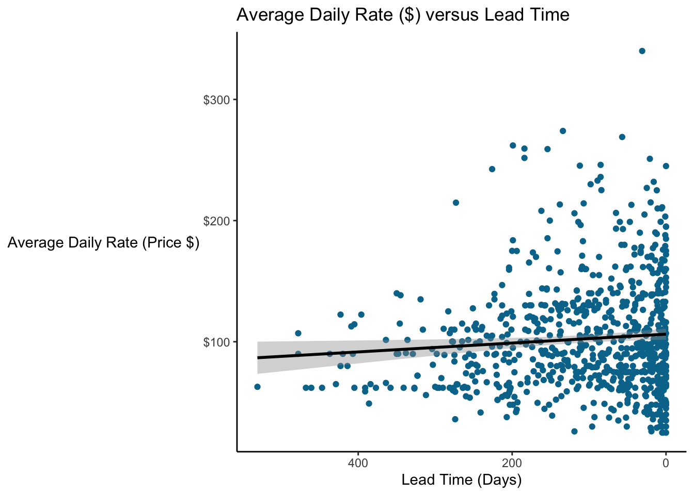

11 Line Graphs and Time Series

11.1 Line Graphs
Line graphs are ideal when you want to show trends or show the relationship between two numerical variables.
For the next few examples, we’ll switch away from our hotel_bookings.csv data and look at another real dataset of purchase card transactions made by employees of the City of San Jose, CA, USA.
### Make a line graph of total transactions by month
# Summarize the data and feed it to ggplot
PCard %>%
group_by(Year, Month) %>%
summarize(date = min(Date), Count = n()) %>%
ggplot(aes(x = date, y = Count)) +
geom_line(color = "#7a0019") +
labs(x = "Month",
y = "Total Transactions",
title = "Number of Purchase Card Transactions by Month") +
scale_x_date(date_labels = "%b %y", date_breaks = "6 months") +
theme(plot.title = element_text(hjust=0.5, face="bold"),
plot.background=element_rect(fill="#ffffff"),
panel.background=element_blank(),
panel.grid.minor=element_blank(),
panel.grid.major.y=element_blank(),
panel.grid.major.x=element_line(),
axis.ticks.length = unit(.25, "cm"),
axis.line = element_line(color = "black"),
legend.position = "none")
Sometimes you might want to plot multiple lines on a plot. There’s one employee who has far more transactions than anyone else.
### Analyze total number of transactions by month
# Create a dataframe with transactions by each employee by month
# only looking at employees who had a month with at least 50 transctions
PCard %>%
group_by(CardholderName, Year, Month) %>%
summarize(date = min(Date), Count = n()) %>%
filter(max(Count)>60) %>%
ggplot(aes(x = date, y = Count, color = CardholderName)) +
geom_line() +
labs(x = "Month",
y = "Total Transactions",
title = "Number of Purchase Card Transactions by Month by Employee") +
scale_color_manual(values = c("grey50", "grey50", "grey50", "grey50", "#7a0019", "grey50", "grey50", "grey50", "grey50", "grey50", "grey50")) +
scale_x_date(date_labels = "%b %y", date_breaks = "6 months") +
theme(plot.title = element_text(hjust=0.5, face="bold"),
plot.background=element_rect(fill="#ffffff"),
panel.background=element_blank(),
panel.grid.minor=element_blank(),
panel.grid.major.y=element_blank(),
panel.grid.major.x=element_line(),
axis.ticks.length = unit(.25, "cm"),
axis.line = element_line(color = "black"),
legend.position = "none")
Who is this and what department do they work for? Let’s make a quick table, looking at the top five people by the number of purchase card transactions they’ve made.
library(knitr)
PCard %>%
group_by(CardholderName, Department) %>%
summarize(Transactions = n(), MeanAmount = dollar(mean(Amount))) %>%
arrange(-Transactions) %>%
head(n=5) %>%
kable(col.names = c("Cardholder Name", "Department", "Total Transactions", "Mean Amount"))| Cardholder Name | Department | Total Transactions | Mean Amount |
|---|---|---|---|
| MARCIA ROUVELL | LIBRARY | 2929 | $5.67 |
| TINA YU TAYLOR | ENVIRONMENTAL SERVICES | 1663 | $311.43 |
| ALBERT RODRIGUEZ | PARKS AND REC | 1596 | $251.57 |
| JULIE CHIOU | CITY MANAGER | 1314 | $278.42 |
| MICHELLE KAHIHIKOLO | FIRE | 1305 | $427.99 |
If you dig into the data, we see a large number of small dollar transactions for postage purchased by this employee.
11.2 Other Tools for Time Series
Suppose we want to see if the distribution has changed over time? We can’t aggregate with the sum or count and use a line graph (because then we wouldn’t see all the points.)
11.2.1 Scatterplot
We can use a scatterplot to plot each point. Let’s switch back to the hotel dataset for a minute. Let’s plot the price paid by month (and considering our earlier concerns about overplotting, we’ll look at a sample, jitter, and use transparency.)
### Use a scatterplot to plot the ADR (Average Daily Rate, $) by month
# We'll take a sample
bookingdata %>%
sample_frac(0.05) %>%
mutate(arrival_date_month = factor(arrival_date_month,
levels = c("January", "February", "March",
"April", "May", "June", "July",
"August", "September", "October",
"November", "December"))) %>%
ggplot(aes(x = arrival_date_month, y = adr)) +
geom_jitter(color = "#00759a", alpha = 0.7) +
labs(x = "Month",
y = "Average Daily Rate",
title = "ADR ($) Over Month",
subtitle = "Each point represents one booking") +
scale_y_continuous(labels = scales::dollar_format()) +
scale_x_discrete(labels = c("January" = "Jan", "February" = "Feb", "March" = "Mar",
"April" = "Apr", "August" = "Aug", "September" = "Sept",
"October" = "Oct", "November" = "Nov", "December" = "Dec")) +
theme(legend.position = "none", # Hide legend
plot.title = element_text(hjust=0.5, face="bold"),
panel.background=element_blank(),
panel.grid.minor=element_blank(),
panel.grid.major.y=element_blank(),
panel.grid.major.x=element_line(),
axis.line.x = element_line(color = "black")) Well look at that!
Well look at that!
11.2.2 Box plot
Box plots are excellent for looking at changes in a distribution over time. Suppose we want to look at prices by month. Here I’m using a style proposed by Tufte which uses a dot for the median, a gap for the interquartile range, and lines for whiskers. It’s useful when there are so many values side by side and a dataset (like the hotelbookings dataset) that has many outliers).
It’s not perfect though; I struggle sometimes visualizing the “blank space” where the bulk of the data points are.
### Make a Tufte-style boxplot
# This plots the median as a dot, the IQR as a blank space, and the whiskers+outliers as a line.
# Load ggthemes package
library(ggthemes)
# Tufte-style boxplot
bookingdata %>%
filter(hotel == "City Hotel") %>%
mutate(arrival_date_month = factor(arrival_date_month,
levels = c("January", "February", "March",
"April", "May", "June", "July",
"August", "September", "October",
"November", "December"))) %>%
ggplot(aes(x = arrival_date_month, y = adr)) +
geom_tufteboxplot(color = "#00759a") +
labs(x = "Month",
y = "Average Daily Rate",
title = "Boxplot Time Series (Tufte-Style Dot+Whisker)",
subtitle = "City Hotel Average Daily Rate ($) by Month (2015-2017)") +
scale_y_continuous(labels = scales::dollar_format()) +
scale_x_discrete(labels = c("January" = "Jan", "February" = "Feb", "March" = "Mar",
"April" = "Apr", "August" = "Aug", "September" = "Sept",
"October" = "Oct", "November" = "Nov", "December" = "Dec")) +
theme(legend.position = "none", # Hide legend
plot.title = element_text(hjust=0.5, face="bold"),
panel.background=element_blank(),
panel.grid.minor=element_blank(),
panel.grid.major.y=element_blank(),
panel.grid.major.x=element_line(),
axis.line.x = element_line(color = "black"))
11.3 Seasonality, Cycles, and “Normalizing” Data
11.3.1 Plotting Cyclical Data
Identifying cycles or seasonality in data is often important for forecasting. Let’s plot the number of purchase card transactions by month, with a separate line for each year.
### Make a line graph of total transactions by month
# Summarize the data and feed it to ggplot
PCard %>%
group_by(Year, Month) %>%
summarize(Count = n(), Year = factor(Year)) %>%
ggplot(aes(x = Month, y = Count, color = Year)) +
geom_line() +
scale_color_brewer(palette = "GnBu") +
scale_x_continuous(breaks = c(1, 3, 5, 7, 9, 11), labels = c("January", "March", "May", "July", "September", "November")) +
labs(x = "Month",
y = "Total Transactions",
title = "Number of Purchase Card Transactions by Month") +
theme(plot.title = element_text(hjust=0.5, face="bold"),
plot.background=element_rect(fill="#ffffff"),
panel.background=element_blank(),
panel.grid.minor=element_blank(),
panel.grid.major.y=element_blank(),
panel.grid.major.x=element_line(),
axis.ticks.length = unit(.25, "cm"),
axis.line = element_line(color = "black"),
legend.position = "right")
Interestingly, we see that in 2014 and 2015, there was a huge drop-off around the middle of the year. Maybe they ran out of funding then? But in recent years, it’s more controlled and even throughout the year.
There are some advanced prediction methods called ARIMA that can help make predictions with this kind of data. They’re outside the scope of this class, but are commonly used in finance.
What could be improved on this graph? Well, the colors aren’t perfect. Some are a little hard to see. And maybe we could add year labels for 2014 and 2015.
11.3.2 Normalization
Okay, let’s look at the graph above. But maybe just a couple years, 2016-2018, so it’s a little easier to see. And for this, the year doesn’t really matter, so we’ll just make everything blue again.
### Make a line graph of total transactions by month
# Summarize the data and feed it to ggplot
PCard %>%
filter(Year>2015) %>%
group_by(Year, Month) %>%
summarize(Count = n()) %>%
mutate(Year = factor(Year)) %>%
ggplot(aes(x = Month, y = Count, group = Year)) +
geom_line(color = "#00759a") +
scale_x_continuous(breaks = c(1, 3, 5, 7, 9, 11), labels = c("January", "March", "May", "July", "September", "November")) +
labs(x = "Month",
y = "Total Transactions",
title = "Number of Purchase Card Transactions by Month: 2016-2019") +
theme(plot.title = element_text(hjust=0.5, face="bold"),
plot.background=element_rect(fill="#ffffff"),
panel.background=element_blank(),
panel.grid.minor=element_blank(),
panel.grid.major.y=element_blank(),
panel.grid.major.x=element_line(),
axis.ticks.length = unit(.25, "cm"),
axis.line = element_line(color = "black"),
legend.position = "right")
Quite a consistent sawtooth pattern year-to-year. You’ll see this a lot in finance, sales, marketing, donation, etc data. Why?
Let’s go back to the data generating process. Where did this data come from? Well, this is purchase card data that people made for their jobs. Most people do most of their work…on workdays! And different months have different numbers of days, and different numbers of workdays.
We’ll assume that 2019 is representative (though it does vary year to year!). 30 days has November, April, June and September…
| Month | Days in Month | Workdays (US) |
|---|---|---|
| January | 31 | 23 |
| February | 28 | 20 |
| March | 31 | 21 |
| April | 30 | 22 |
| May | 31 | 23 |
| June | 30 | 20 |
| July | 31 | 23 |
| August | 31 | 22 |
| September | 30 | 21 |
| October | 31 | 23 |
| November | 30 | 21 |
| December | 31 | 22 |
Let’s normalize the number of transactions by the number of workdays and see what happens. Does this explain the sawtooth pattern? If it did, we should see, more or less, flat lines.
### Make a line graph of total transactions by month
# Summarize the data and feed it to ggplot
PCard %>%
filter(Year>2015) %>%
group_by(Year, Month) %>%
summarize(Count = n()) %>%
mutate(Year = factor(Year), Count = as.numeric(Count),
Normalized_Count = case_when(Month == 1 ~ Count / 23,
Month == 2 ~ Count / 20,
Month == 3 ~ Count / 21,
Month == 4 ~ Count / 22,
Month == 5 ~ Count / 23,
Month == 6 ~ Count / 20,
Month == 7 ~ Count / 23,
Month == 8 ~ Count / 22,
Month == 9 ~ Count / 21,
Month == 10 ~ Count / 23,
Month == 11 ~ Count / 21,
Month == 12 ~ Count / 21,
TRUE ~ Count / 22)) %>%
ggplot(aes(x = Month, y = Normalized_Count, group = Year)) +
geom_line(color = "#00759a") +
scale_x_continuous(breaks = c(1, 3, 5, 7, 9, 11), labels = c("January", "March", "May", "July", "September", "November")) +
labs(x = "Month",
y = "Total Transactions",
title = "Purchase Card Transactions Per Workday by Month: 2016-2019") +
theme(plot.title = element_text(hjust=0.5, face="bold"),
plot.background=element_rect(fill="#ffffff"),
panel.background=element_blank(),
panel.grid.minor=element_blank(),
panel.grid.major.y=element_blank(),
panel.grid.major.x=element_line(),
axis.ticks.length = unit(.25, "cm"),
axis.line = element_line(color = "black"),
legend.position = "right")
It looks like we don’t see that here. So perhaps there really is a cyclical nature to the purchasing patterns. This is something you could look at in your Lab…is there specific cycle to any one department?
It looks like the number of workdays in the month doesn’t matter. But do people make more purchases on weekdays? Let’s check.
### Make a line graph of total transactions by weekday
# Summarize the data and feed it to ggplot
PCard %>%
mutate(weekday = factor(weekdays(Date), levels = c("Monday", "Tuesday", "Wednesday",
"Thursday", "Friday", "Saturday",
"Sunday"))) %>%
group_by(weekday) %>%
summarize(Count = n()) %>%
ggplot(aes(x = weekday, y = Count, group = 1)) +
geom_line(color = "#00759a") +
labs(x = "Day of the Week",
y = "Total Transactions",
title = "Purchase Card Transactions Per Weekday") +
theme(plot.title = element_text(hjust=0.5, face="bold"),
plot.background=element_rect(fill="#ffffff"),
panel.background=element_blank(),
panel.grid.minor=element_blank(),
panel.grid.major.y=element_blank(),
panel.grid.major.x=element_line(),
axis.ticks.length = unit(.25, "cm"),
axis.line = element_line(color = "black"),
legend.position = "right")
So there is a drop off! Notice, though that we grouped everything by day, regardless of year. Was it different year-to-year?
### Make a line graph of total transactions by weekday
# Summarize the data and feed it to ggplot
linegraph_data <- PCard %>%
mutate(weekday = factor(weekdays(Date), levels = c("Monday", "Tuesday", "Wednesday",
"Thursday", "Friday", "Saturday",
"Sunday"))) %>%
group_by(Year, weekday) %>%
summarize(Count = n()) %>%
mutate(Year = factor(Year),
y_pos = as.numeric(Count),
y_pos = case_when(Year == "2018" ~ y_pos - 500,
Year == "2016" ~ y_pos + 500,
TRUE ~ y_pos))
linegraph_data %>% ggplot(aes(x = weekday, y = Count, color = Year, group = Year)) +
geom_line() +
geom_text(data = linegraph_data %>% filter(weekday == "Sunday"),
aes(label = Year, color = Year, x = 7.3, y = y_pos)) +
scale_color_manual(values = c("2014" = "#7a0019", "2015" = "#5b0013", "2016" = "#00759a", "2017" = "#ffcc33", "2018" = "gray40", "2019" = "black")) +
labs(x = "Day of the Week",
y = "Total Transactions",
title = "Purchase Card Transactions Per Weekday") +
theme(plot.title = element_text(hjust=0.5, face="bold"),
plot.background=element_rect(fill="#ffffff"),
panel.background=element_blank(),
panel.grid.minor=element_blank(),
panel.grid.major.y=element_blank(),
panel.grid.major.x=element_line(),
axis.ticks.length = unit(.25, "cm"),
axis.line = element_line(color = "black"),
legend.position = "none")11.4 Variations
11.4.1 Slope Graph
Slope graphs can show changes over an interval (say, start to finish, or between two years) and are ideal for showing changes between groups or categories. They can make it easy to show changes in position or ranking. They often show just two periods (two points/one line per category) but they can be extended to more than two periods if the data isn’t too crowded.
Let’s look at the change in some NBA team rankings.
### Make a Slope Graph to examine NBA team rankings
# Eastern Conference Rankings
NBA_rankings <- tibble(
team = c("Bucks", "Raptors", "76ers", "Celtics", "Pacers", "Nets", "Magic", "Heat"),
rank2018 = c(1, 2, 3, 4, 5, 6, 7, 10),
rank2019 = c(1, 2, 6, 3, 4, 7, 8, 5),
rank2020 = c(1, 2, 6, 3, 4, 7, 8, 5)
)
# Transform the wide data into long data
NBA_rankings <- NBA_rankings %>%
pivot_longer(cols = -team,
names_to = "Year",
names_prefix = "rank",
values_to = "Rank")
NBA_rankings <- NBA_rankings %>%
mutate(Year = as.numeric(Year))
# Create the Slope Graph
NBA_rankings %>%
ggplot(aes(x = Year, y = Rank, color = team)) +
geom_line() +
geom_text(data = NBA_rankings %>% filter(Year == 2020),
aes(label = team, y = Rank, x = 2020.2, color = team)) +
geom_label(aes(label = Rank, color = team), fill = "white", label.size = 0) +
scale_x_continuous(breaks = c(2018, 2019, 2020), position = "top") +
scale_y_reverse() +
scale_color_manual(values = c("Bucks" = "#00471B", "76ers" = "#006BB6",
"Celtics" = "#007A33", "Nets" = "black",
"Magic" = "gray40", "Pacers" = "#002D62",
"Raptors" = "#CE1141", "Heat" = "#98002E")) +
labs(title = "NBA Team Rankings",
x = "",
y = "") +
theme(plot.title = element_text(hjust=0.5, face="bold"),
plot.background=element_blank(),
panel.background=element_blank(),
panel.grid.minor=element_blank(),
panel.grid.major.y=element_blank(),
panel.grid.major.x=element_line(),
axis.line = element_blank(),
axis.text.y = element_blank(),
axis.ticks = element_blank(),
axis.text.x = element_text(color = "black"),
legend.position = "none")
You’re really looking for two things on slope graphs:
Parallel lines which mean that relative positions stayed the same or there was no change
Slopes and Intersections which reflect changes
In the NBA example above, there are two big changes…the Miami Heat shoot from 10th place to 5th from 2018 to 2019, and the Philadelphia 76ers drop from 3rd to 6th. What happens between 2019 and 2020? Everything stayed the same, hence the parallel lines.
11.4.2 Tufte-Style Line Graph
An extension of the slope graph is the line graph style espoused by Tufte. These can work well with a few groups and enough space on the plot, but they don’t work as well if things are very complicated/crowded.
They certainly don’t work if you have many values (e.g. daily data over many years).